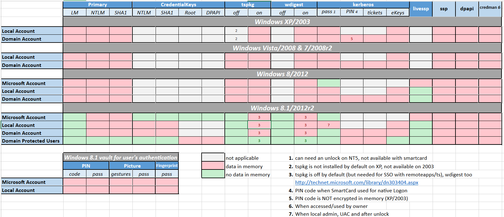

Local Security Authority Subsystem Service
LSASS is a process in Windows that is responsible for enforcing the security policy on the system. It verifies users logging on to a Windows computer or server, handles password changes, and creates access tokens. It also writes to the Windows Security Log. lsass.exe is a crucial system file and is located in the System32 folder. Forcible termination of lsass.exe will result in the Welcome screen losing its account(s).
This is meant to facilitate single sign-on ensuring a user isn't prompted each time resource access is requested. The credential data may include Kerberos tickets, NTLM password hashes, LM password hashes (if the password is <15 characters), and even clear-text passwords (to support WDigest and SSP authentication among other).
By default Windows Server 2008 and Winodws Vista no longer generate LM hashes unless explicitly enabled.
By default in Windows 8.1 and Server 2012R2, the LM hash and "clear-text" passwords are no longer in memory.
This functionality was 'back-ported' to earlier versions of Windows in kb2871997
WDigestUseLogonCredential must be set to 0 (Digest Disabled)
Below is a (slightly outdated) chart that shows which credentials are available in LSASS memory
